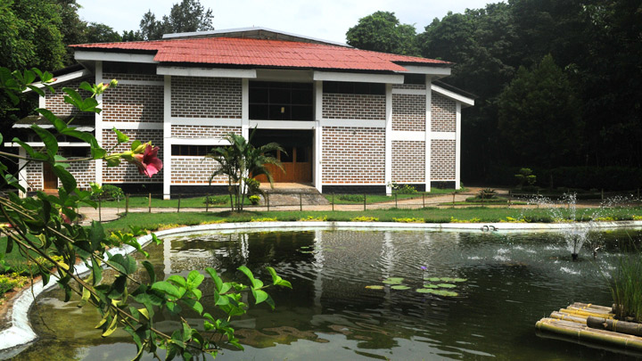
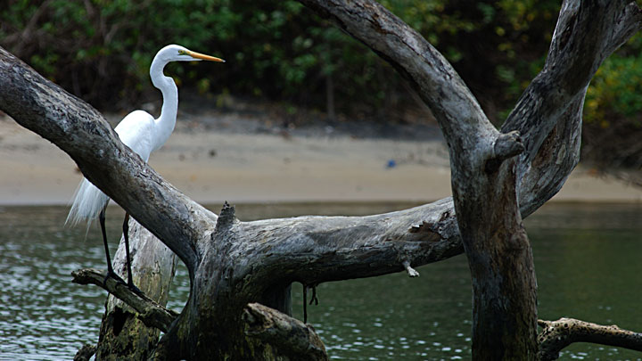
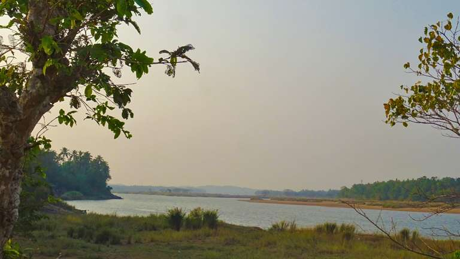
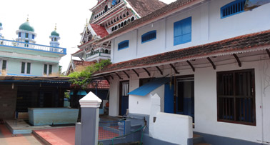

Top 5 places to visit in Malappuram
Nilambur Teak Museum
Kerala has had a long association with teak and has always played a central role in its cultivation and trade. The word teak itself is said to have come from the Malayalam word 'theku'. The Teak Museum in Nilambur celebrates this ancient relationship and takes one on a special journey through history, chronicling teak and its importance in our culture.
Teak is still the most sought after form of timber. The museum was made of the sub-centre of Kerala Forest Research Institute (KFRI) in 1995. Teak is extremely significant in the area. The world's first Teak (Tectonagrandis) plantation was raised in Nilambur way back in the 1840s and is among the premier teak plantations in the world. Visitors come here in large numbers and are greeted by the extensive root system of a 55-year-old teak tree in the portico.
The ground floor of the facility is dedicated to research on the Kannimara Teak. The teak plantation nearby is host to this great tree which is the oldest of its kind in the world. It is an integral part of the region’s history and we get a detailed account of the bark, flower and fruit of the teak. We alsocatch a glimpse into the teak plantation activities undertaken 160 years ago. Some of the other attractions here are the traditional granary and a miniature model of a sailing vessel called Uru, made of teak wood.
Here, one can also find the large stump of a 480-year-old teak tree brought from Nagarampara Forest Range in Kottayam division. You can also observe the various methods of seed-grading, pre-sowing treatment, preparation of teak stumps, vegetative propagation of teak and the different stages in the complete rotation cycle of teak from seed to mature tree.
There are a variety of birds and reptiles in the 800 m long bio-resources natural trail. There are 50 naturally grown tree species and 136 endangered and near-extinct tree species of the Western Ghats planted here. About 58 species of birds, both resident and migratory, has been recorded in this area. This museum takes you on an enriching journey that cannot be replicated anywhere else in the world.

Kadalundi Bird Sanctuary
A cluster of scenic islands, beautiful hills and rare avian species would intrigue and entice every birdwatcher on the planet. This is exactly what the Kadalundi Bird Sanctuary has to offer its visitors. One is greeted by the Kadalundi River flowing into the Arabian Sea while migratory birds casually flit about. This untouched land has over 60 species of migratory birds from across the planet that visits it during different times of the year. One can see seagulls, terns, sandpipers, sand plovers, red and greenshanks, turnstones and so on with November to April being the ideal viewing time. A small hill nearby gives you a panoramic view of the entire region. You can sit back and relax, with the odd otter peeking out at you playfully. This is indeed a paradise designed especially for bird lovers.

Bharathapuzha River
The Bharathapuzha, locally known as Nila, has had a strong influence on the culture of the South Malabar region of Kerala. From the Anaimalai hills in the Western Ghats, the river flows through three districts of Kerala " Palakkad, Thrissur and Malappuram " covering 11 taluks, before joining the Arabian Sea at Ponnani in Malappuram district.
There are many folklores and myths related to the river, the deities and the temples along its banks. The river has been a witness to many historical events including the Mamankam, which was celebrated once in 12 years during the reign of the Zamorins. The Hindu obsequies that are observed to propitiate the departed souls have been carried out on the banks of this river for centuries. The temple of Thirunavaya, which has great significance in history as well as in the Hindu tradition, is situated near the banks of the Bharathapuzha.
Apart from the traditional and cultural significance it enjoys in the state, Nila has also captured the imagination of countless artists who grew up in the regions near it. The river has been a Muse to many writers right from Thunchath Ezhuthachan, the father of Malayalam language, to many illustrious Malayalam writers of the present generation.

Valiya Juma Masjid
The Andunercha also known by the name Ponnani Andunercha falls in the month of March/April, just before the monsoon starts, and lasts for four days. It is the major festival of the renowned Ponnani Juma Masjid. Built about 600 years ago by Zainuddin Ibn Bin Ahmed (Zainuddin Makhdoom I), the masjid or mosque is constructed in a traditional Kerala architectural style with an extensive use of wood. A 500 year old lamp, believed to be used by Zainuddin Makhdum II, stands in the middle of the prayer hall. The mosque has played an important part in imparting Islamic doctrine and philosophy over the years.

Kodikuthimala
Welcome to Kodikuthimala – a quiet beauty that waits to fascinate you with its perennial springs, waterfalls and sheer charm. Walk through the lush green valleys and feel refreshed and young all again.
Nestling amidst the mist-clad Amminikkadan hills in Malappuram district, Kodikuthimala is a favoured weekend destination in north Kerala. Popularly known as the mini Ooty of Malappuram, this green paradise has long been a magnet for trekkers, travel junkies and nature enthusiasts. It is the best place to stop by on your trip to north Kerala.
You are sure to feel truly rejuvenated as you step into this quaintly beauteous atmosphere. The grassy meadows, the cool breeze and the serene, secluded ambience are truly rewarding. You will get a chance to see a spectrum of vibrant flora and fauna as well.
It is believed that the British hoisted (kuthi) their flag (kodi) on this hill (mala), during a survey, and thus the place came to be known as Kodikuthimala (literally, the hill where a flag was hoisted).
The place is situated at an altitude of 2,000 feet above sea level, offering a spectacular visual treat. It also has a watch tower that offers its visitors a vantage point to seize a panoramic view and distil the full essence of its splendour.
As you trek up and down the undulating landscape of Kodikuthimala you are likely to see Nature in all her moods. You may be enveloped by a blanket of mist or baptized by a light drizzle, you may be caressed by happy sunshine or pricked by a bit of chill. At times when the mist becomes palpably thick, the hilltop can get quite spooky too!